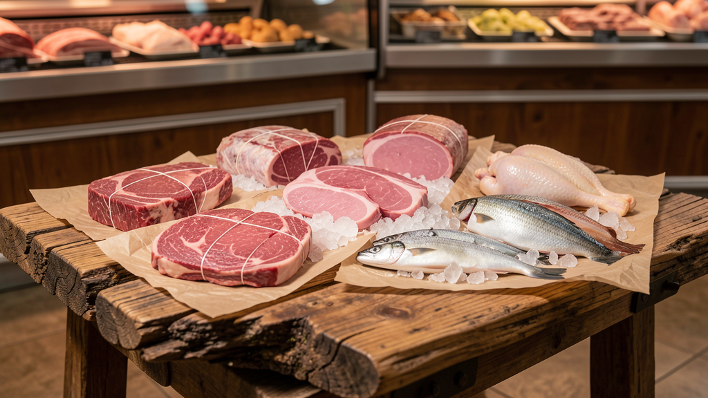

Door-to-door delivery
Free local delivery messaging is emphasized with simple order capture, preferred delivery window, and cooler/drop-off instructions.
Midwest #1 source for top quality meats & seafood
A high-fidelity website prototype for MidWest Suppliers: rustic deadwood visuals, 3D meat-cut transitions, brochure/menu pages, an online order flow, and a mocked live-inventory AI agent ready to wire up later.

Door-to-door + in-person
Free local delivery messaging is emphasized with simple order capture, preferred delivery window, and cooler/drop-off instructions.
Mobile-friendly pages make it easy for the sales team to pull up cuts, bundles, specials, and availability while talking to customers.
Starter categories
3D transition concept
The current build uses real-time Three.js geometry as a lightweight browser-native mockup. Later we can replace these with generated GLB/GLTF models from a 3D workflow while keeping the same transition controls.